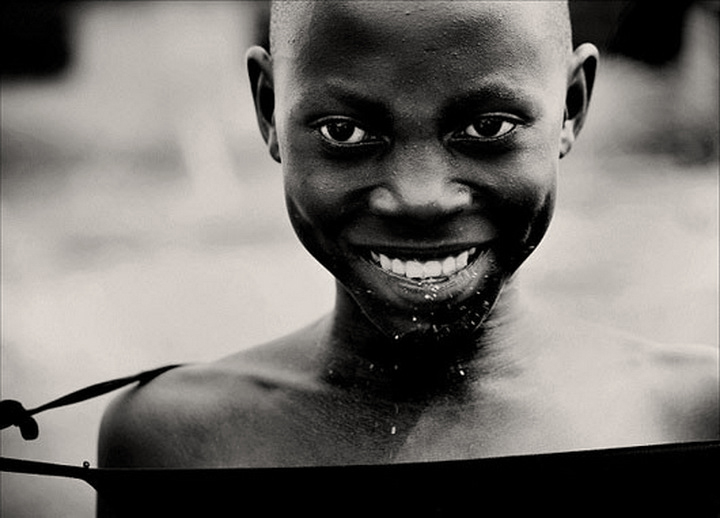

尝试 position 和 float 的效果，思考它们的异同和应用场景。注意测试不同情况，尤其是极端情况下的效果。调节浏览器宽度，固定宽度和自适应宽度的效果始终符合预期。改变中间一栏的内容长度，以确保在中间一栏较高和右边一栏较高时，父元素的高度始终为子元素中最高的高度。其他效果图中给出的标识均被正确地实现。尝试 position 和 float 的效果，思考它们的异同和应用场景。注意测试不同情况，尤其是极端情况下的效果。调节浏览器宽度，固定宽度和自适应宽度的效果始终符合预期。改变中间一栏的内容长度，以确保在中间一栏较高和右边一栏较高时，父元素的高度始终为子元素中最高的高度。其他效果图中给出的标识均被正确地实现。 尝试 position 和 float 的效果，思考它们的异同和应用场景。注意测试不同情况，尤其是极端情况下的效果。调节浏览器宽度，固定宽度和自适应宽度的效果始终符合预期。改变中间一栏的内容长度，以确保在中间一栏较高和右边一栏较高时，父元素的高度始终为子元素中最高的高度。其他效果图中给出的标识均被正确地实现。 尝试 position 和 float 的效果，思考它们的异同和应用场景。注意测试不同情况，尤其是极端情况下的效果。调节浏览器宽度，固定宽度和自适应宽度的效果始终符合预期。改变中间一栏的内容长度，以确保在中间一栏较高和右边一栏较高时，父元素的高度始终为子元素中最高的高度。其他效果图中给出的标识均被正确地实现。 尝试 position 和 float 的效果，思考它们的异同和应用场景。注意测试不同情况，尤其是极端情况下的效果。调节浏览器宽度，固定宽度和自适应宽度的效果始终符合预期。改变中间一栏的内容长度，以确保在中间一栏较高和右边一栏较高时，父元素的高度始终为子元素中最高的高度。其他效果图中给出的标识均被正确地实现。 尝试 position 和 float 的效果，思考它们的异同和应用场景。注意测试不同情况，尤其是极端情况下的效果。调节浏览器宽度，固定宽度和自适应宽度的效果始终符合预期。改变中间一栏的内容长度，以确保在中间一栏较高和右边一栏较高时，父元素的高度始终为子元素中最高的高度。其他效果图中给出的标识均被正确地实现。
叶yeah


- 